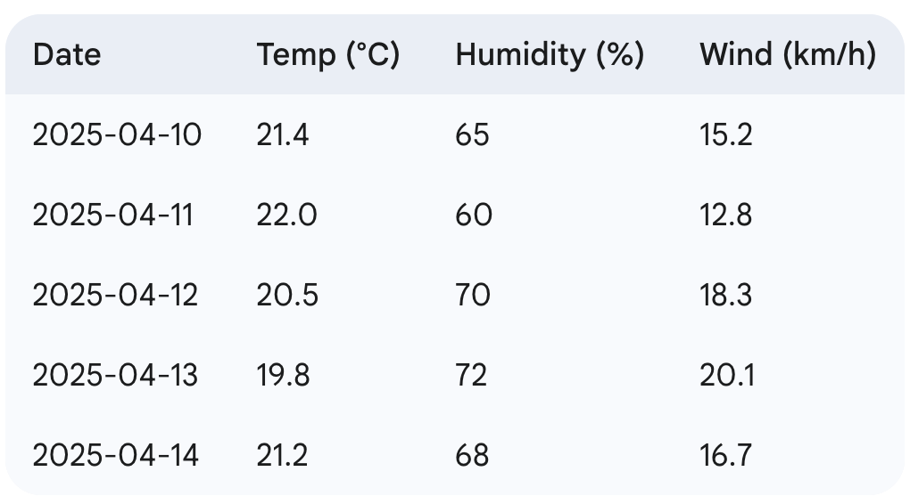
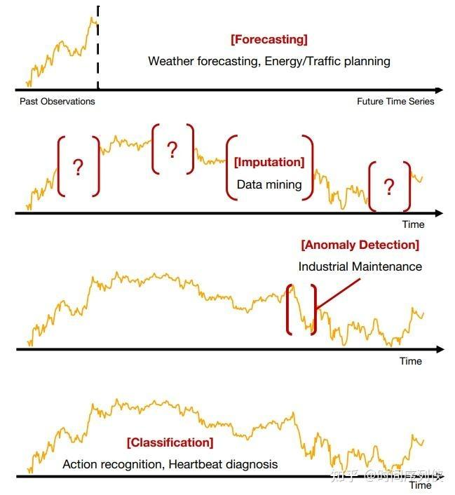

25 Time Series Fundamentals
25.1 Problem Formulation
A time series is a sequence \(\{x_t\}_{t=1,\ldots,T}\) of observations indexed by time. The core structural assumption is that consecutive observations are statistically dependent — the defining property that separates time series from i.i.d. regression problems.
Univariate time series: a single time-dependent variable, \(x_t \in \mathbb{R}\).
Multivariate time series: \(M\) variables recorded at each time step, \(\mathbf{x}_t \in \mathbb{R}^M\).

Endogenous variables: quantities the model explains or predicts (the target).
Exogenous variables: external covariates used as inputs but not predicted (e.g., predicting temperature with humidity and wind speed as exogenous inputs).
Core tasks:
| Task | Input | Output |
|---|---|---|
| Forecasting | Context window \(x_{t-p+1:t}\) | Future values \(x_{t+1:t+h}\) |
| Imputation | Partially observed \(x_{1:T}\) | Filled-in \(x_{1:T}\) |
| Anomaly detection | \(x_{1:T}\) | Anomaly scores / flags |
| Classification | Segment \(x_{t-p+1:t}\) | Class label \(y\) |

Forecasting setup: given a context window of \(p\) past observations, predict a forecast horizon of \(h\) future values. The pair \((x_{t-p+1:t},\, x_{t+1:t+h})\) is one training sample.
25.2 Core Concepts
25.2.1 Autocorrelation
Autocorrelation measures the linear correlation of a time series with a lagged copy of itself. The Autocorrelation Function (ACF) at lag \(k\) is: \[\boxed{\rho_k = \frac{\mathrm{Cov}(x_t,\, x_{t-k})}{\mathrm{Var}(x_t)} = \frac{\displaystyle\sum_{t=k+1}^T (x_t - \bar{x})(x_{t-k} - \bar{x})}{\displaystyle\sum_{t=1}^T (x_t - \bar{x})^2}}\]
\(\rho_k \in [-1, 1]\): values near \(\pm 1\) indicate strong linear dependence at lag \(k\); near 0 indicates none.
The Partial Autocorrelation Function (PACF) at lag \(k\) measures the correlation between \(x_t\) and \(x_{t-k}\) after removing the linear effect of all intermediate lags \(\{x_{t-1}, \ldots, x_{t-k+1}\}\).
ACF/PACF as model selection tools:
| Pattern | Suggests |
|---|---|
| ACF decays slowly, PACF has sharp cutoff at lag \(p\) | AR(\(p\)) |
| ACF has sharp cutoff at lag \(q\), PACF decays slowly | MA(\(q\)) |
| Both decay slowly | ARMA(\(p\), \(q\)) |
25.2.2 Stationarity
A time series is weakly stationary (covariance-stationary) if: 1. \(\mathbb{E}[x_t] = \mu\) is constant (no trend) 2. \(\mathrm{Var}(x_t) = \sigma^2\) is constant (no variance drift) 3. \(\mathrm{Cov}(x_t, x_{t-k}) = \gamma_k\) depends only on lag \(k\), not on \(t\)
Stationarity matters because most forecasting methods assume that the statistical relationship between past and future is stable. A series with a trend or growing variance violates this assumption.
Testing for stationarity: the Augmented Dickey-Fuller (ADF) test has null hypothesis \(H_0\): the series has a unit root (is non-stationary). Rejecting \(H_0\) (low \(p\)-value) supports stationarity.
Removing non-stationarity: differencing — replacing \(x_t\) with \(\nabla x_t = x_t - x_{t-1}\). Applying differencing \(d\) times is denoted the \(I(d)\) operation. First-order differencing (\(d=1\)) eliminates linear trends; second-order (\(d=2\)) eliminates quadratic trends: \[x'_t = x_t - x_{t-1} \quad \text{(first-order differencing)}\] \[x''_t = x'_t - x'_{t-1} = x_t - 2x_{t-1} + x_{t-2} \quad \text{(second-order differencing)}\]
25.2.3 Seasonality
Seasonality is a recurring pattern at a fixed period \(s\) (e.g., \(s=12\) for monthly data with yearly seasonality, \(s=7\) for daily data with weekly seasonality). Multiple seasonal periods can co-occur (e.g., hourly electricity demand has daily and weekly cycles).
Seasonal differencing removes seasonality of period \(s\): \[x_t^{(s)} = x_t - x_{t-s} \quad \text{(seasonal differencing)}\]
Combining seasonal and first-order differencing removes both seasonality and a linear trend: \[x_t'^{(s)} = x_t^{(s)} - x_{t-1}^{(s)} = x_t - x_{t-1} - x_{t-s} + x_{t-s-1} \quad \text{(seasonal + first-order differencing)}\]
25.3 Data Handling
25.3.1 Sliding Window
Models are trained on sample sequences extracted from the raw time series via a sliding window: for each time step \(t\), extract the pair \((\text{context}: x_{t-p+1:t},\; \text{target}: x_{t+1:t+h})\) and advance \(t\) by one step (or by a stride \(> 1\) for efficiency).
25.3.2 Temporal Train / Validation / Test Split
Never shuffle time series data. Shuffling causes future data to leak into the training set, inflating all metrics.
Temporal splits are defined by cutoff timestamps:
- Training set: all samples whose context window ends before the training cutoff \(\tau_{\text{train}}\).
- Validation set: samples between \(\tau_{\text{train}}\) and \(\tau_{\text{val}}\) (used for hyperparameter tuning).
- Test set: samples after \(\tau_{\text{val}}\) (used only for final evaluation).
The target sequences of training samples may extend past \(\tau_{\text{train}}\) — what must not happen is the context window of a training sample seeing data from after \(\tau_{\text{train}}\).
Interview Insight: “Why can’t we shuffle time series?” Shuffling breaks temporal causality — a training sample that includes future observations relative to its context would give the model access to information it cannot have at inference time, yielding optimistic metrics that do not transfer to real deployment.
25.4 Classical Models
25.4.1 Simple Moving Average
The Simple Moving Average (SMA) of window size \(k\) predicts the next value as the mean of the most recent \(k\) observations: \[\hat{x}_{t+1} = \frac{1}{k}\sum_{i=0}^{k-1} x_{t-i}\]
No learned parameters; serves as a strong baseline for slowly-varying series.
25.4.2 Simple Exponential Smoothing
Simple Exponential Smoothing (SES) is a weighted average where exponentially decaying weights assign more importance to recent observations: \[\hat{x}_{t+1} = \alpha x_t + (1-\alpha)\hat{x}_t = \alpha \sum_{j=0}^{t-1}(1-\alpha)^j x_{t-j}, \qquad \alpha \in (0,1)\]
Unrolling the recursion \(k\) steps shows the exponentially decaying weights explicitly: \[\hat{x}_t = \sum_{i=1}^{k} \underbrace{\alpha(1-\alpha)^{i-1}}_{\text{exponential smoothing}} \cdot\, x_{t-i} + (1-\alpha)^k \hat{x}_{t-k}\]
\(\alpha\) close to 1: weights concentrated on recent observations (tracks changes quickly, noisier). \(\alpha\) close to 0: weights spread across history (smoother, slower to adapt). Also known as the Exponential Moving Average (EMA).
25.4.3 ARIMA
ARIMA(\(p\), \(d\), \(q\)) — AutoRegressive Integrated Moving Average — combines three components:
AR(\(p\)): current value is a linear combination of the \(p\) most recent values plus white noise: \[x_t = c + \phi_1 x_{t-1} + \cdots + \phi_p x_{t-p} + \varepsilon_t\]
MA(\(q\)): current value is a linear combination of the \(q\) most recent error terms: \[x_t = \mu + \varepsilon_t + \theta_1\varepsilon_{t-1} + \cdots + \theta_q\varepsilon_{t-q}\]
I(\(d\)): apply \(d\)-th order differencing \((1-B)^d x_t\) to achieve stationarity, where \(B\) is the backshift operator (\(Bx_t = x_{t-1}\)).
The full ARIMA model in compact form: \[\boxed{\phi(B)(1-B)^d x_t = c + \theta(B)\varepsilon_t}\]
where \(\phi(B) = 1 - \phi_1 B - \cdots - \phi_p B^p\) and \(\theta(B) = 1 + \theta_1 B + \cdots + \theta_q B^q\) are the AR and MA lag polynomials, and \(\varepsilon_t \sim \mathcal{N}(0, \sigma^2)\) is white noise.
Written out explicitly on the \(d\)-times-differenced series \(\Delta^d x_t = (1-B)^d x_t\), this is: \[\Delta^d x_t = \phi_0 + \phi_1 x_{t-1} + \cdots + \phi_p x_{t-p} + \varepsilon_t + \theta_1\varepsilon_{t-1} + \cdots + \theta_q \varepsilon_{t-q}\]
25.4.4 SARIMA
SARIMA(\(p, d, q\))(\(P, D, Q\))\(_s\) — Seasonal ARIMA — extends ARIMA by adding seasonal AR, MA, and differencing terms at period \(s\): \[\Phi(B^s)\phi(B)(1-B^s)^D(1-B)^d x_t = \Theta(B^s)\theta(B)\varepsilon_t\]
where \(\Phi, \Theta\) are the seasonal lag polynomials of orders \(P\) and \(Q\) acting at period \(s\).
25.4.5 Box-Jenkins Procedure
Systematic method for selecting ARIMA parameters:
- Stationarity: visual inspection for trend/seasonality; ADF test; difference until stationary.
- Order identification: inspect ACF/PACF plots to guess \(p\) and \(q\) (see table above).
- Estimation: fit ARIMA(\(p\), \(d\), \(q\)) by MLE or nonlinear least squares.
- Diagnostic checking: residuals should be white noise — no significant ACF/PACF, Ljung-Box test \(p\)-value \(> 0.05\).
- Refinement: if diagnostics fail, return to step 2 and revise model order.
25.5 Evaluation Metrics
All metrics below are computed over a forecast horizon of \(h\) steps, where \(y_{t+k}\) is the ground truth and \(\hat{y}_{t+k}\) is the forecast.
MAE (Mean Absolute Error): \[\text{MAE} = \frac{1}{h}\sum_{k=1}^h |y_{t+k} - \hat{y}_{t+k}|\] Interpretable in the original units. Robust to outliers (linear penalty). Not scale-invariant — cannot compare across series with different magnitudes.
RMSE (Root Mean Squared Error): \[\text{RMSE} = \sqrt{\frac{1}{h}\sum_{k=1}^h (y_{t+k} - \hat{y}_{t+k})^2}\] Penalizes large errors more than MAE (quadratic penalty). Popular in competitions; sensitive to outliers.
MAPE (Mean Absolute Percentage Error): \[\text{MAPE} = \frac{100\%}{h}\sum_{k=1}^h \frac{|y_{t+k} - \hat{y}_{t+k}|}{|y_{t+k}|}\] Scale-independent; easy to interpret as a percentage. Undefined when \(y_{t+k} = 0\); asymmetric (over-penalizes under-forecasts for small values).
SMAPE (Symmetric MAPE): \[\text{SMAPE} = \frac{200\%}{h}\sum_{k=1}^h \frac{|y_{t+k} - \hat{y}_{t+k}|}{|y_{t+k}| + |\hat{y}_{t+k}|}\] Mitigates MAPE’s asymmetry. Still poorly behaved near zero; bounded in \([0\%, 200\%]\).
MASE (Mean Absolute Scaled Error): \[\text{MASE} = \frac{\text{MAE}}{\dfrac{1}{T-1}\sum_{t=2}^T |y_t - y_{t-1}|}\] Scales MAE by the in-sample naïve one-step forecast error (mean absolute first-difference). Scale-independent, well-defined for zero targets, and directly comparable across time series of different scales. The recommended default for comparing models across datasets.
| Metric | Scale-free | Defined at zero | Symmetric | Interpretation |
|---|---|---|---|---|
| MAE | No | Yes | Yes | Original units |
| RMSE | No | Yes | Yes | Original units, outlier-sensitive |
| MAPE | Yes | No | No | % error |
| SMAPE | Yes | No | Yes | Bounded % error |
| MASE | Yes | Yes | Yes | Relative to naïve baseline |
25.6 Interview Questions
Q: What is the difference between univariate and multivariate time series forecasting, and when does modeling cross-variable dependencies matter?
Univariate forecasting predicts one variable from its own history. Multivariate uses multiple variables jointly. Cross-variable dependencies matter when one variable Granger-causes another (e.g., promotions causing demand spikes), when lead-lag relationships exist (e.g., energy prices affecting consumption with a delay), or when multiple correlated series share common latent drivers. However, richer multivariate models also have more parameters and require more data — when cross-variable correlations are weak, univariate models with exogenous inputs (ARIMAX, N-BEATSx) often outperform full joint models.
Q: Why must time series train/val/test splits be temporal, not random?
Random shuffling breaks temporal causality: a training sample could include observations from after its test counterpart, meaning the model implicitly sees “the future” during training. This inflates training-set metrics and produces models that generalize poorly to real deployment (where the future is genuinely unknown). Temporal splits preserve causal ordering by strictly partitioning based on timestamps.
Q: How do you determine the order \((p, d, q)\) for an ARIMA model?
- \(d\): apply the ADF test; difference until stationary. (2) \(p\): look at the PACF of the stationary series — the last significantly non-zero lag suggests \(p\). (3) \(q\): look at the ACF — the last significantly non-zero lag suggests \(q\). Validate by fitting, checking residual whiteness (Ljung-Box test), and comparing models on AIC/BIC. Both criteria penalize model complexity: AIC = \(-2\ell + 2k\), BIC = \(-2\ell + k\ln n\) where \(\ell\) is log-likelihood and \(k\) is the number of parameters.
Q: When should you use MASE instead of MAPE for model evaluation?
MAPE is undefined when targets equal zero (division by zero) and is heavily asymmetric — under-forecasts are penalized more than over-forecasts of the same magnitude. MASE avoids both issues: it scales errors by the naïve one-step forecast error, is well-defined at zero, and is symmetric. Use MASE whenever you compare across multiple time series of different scales, or whenever zero or near-zero values appear in the target.